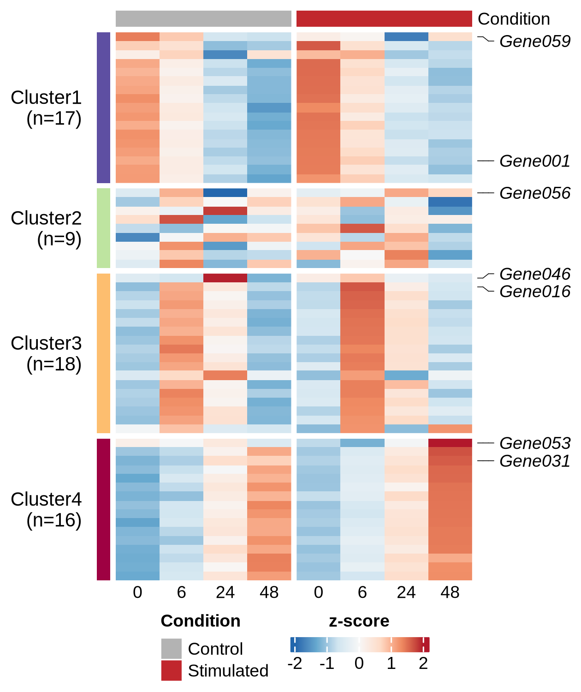

ModuleViz: temporal module discovery and visualization for longitudinal omics
Latest release:
- GitHub: helenhuangmath/ModuleViz, version 1.0.0
Introduction
ModuleViz is an R package for clustering and visualizing longitudinal high-throughput omics data. It works on feature-by-sample matrices from RNA-seq, ATAC-seq, CUT&RUN, pseudobulk single-cell summaries, and related time-course or ordered-state experiments.
The question it answers is: which genes, peaks, or other features follow similar patterns along an ordered biological axis? The axis can be clock time, treatment dose, differentiation state, disease stage, exhaustion state, or any other ordering you supply.
ModuleViz takes a numeric matrix and a sample metadata table, z-scores each feature, clusters features into temporal modules, orders the modules from early-peaking to late-peaking, and draws the result as heatmaps, module trajectory plots, multi-omics heatmaps, and module coherence diagnostics. Heatmaps are drawn with ComplexHeatmap, so the package fits into Bioconductor workflows.

Changes for ModuleViz 1.0.0
- Single-cell input.
pseudobulk_cells()summarises aSingleCellExperiment, aSeuratobject, or a count matrix into pseudobulk profiles. - Bioconductor containers. A
SummarizedExperimentcan be passed wherever a matrix and metadata table are expected. - Any number of omics layers.
multi_cluster(),multi_heatmap(), andmulti_lineplot()align RNA, ATAC, histone marks, and other layers by gene. - Module enrichment.
module_enrichment()tests modules against gene sets and prints the top terms beside the heatmap. - More clustering algorithms.
"clara"and"fuzzy"join"kmeans","hierarchical", and"pam".
The full list is in the release notes.
Install
if (!requireNamespace("BiocManager", quietly = TRUE))
install.packages("BiocManager")
if (!requireNamespace("remotes", quietly = TRUE))
install.packages("remotes")
BiocManager::install("helenhuangmath/ModuleViz")ModuleViz needs R 4.3 or later. See Install ModuleViz for optional packages and a development setup.
Usage
Cluster features into temporal modules and draw the heatmap:
library(ModuleViz)
data("heatmap_example")
obj <- longitudinal_cluster(
heatmap_example$mat, heatmap_example$meta,
sample_col = "SampleID", time_col = "TimeHr", group_col = "Condition",
k = 4
)
longitudinal_heatmap(obj, file = "moduleviz_heatmap.pdf")Plot the mean trajectory of each module:
pattern_lineplot(obj, file = "moduleviz_patterns.pdf")Align several omics layers to the same modules:
multi_heatmap(
list(RNA = obj, ATAC = atac, H3K27ac = h3k27ac),
meta = meta, sample_col = "SampleID", time_col = "TimeHr",
file = "multi_heatmap.pdf"
)Run clustering, both plots, and the table export in one call:
run_longitudinal(mat, meta, out_prefix = "moduleviz",
sample_col = "SampleID", time_col = "TimeHr", k = 4)The Tutorial walks through the workflow step by step. The exported functions are:
| Function | Description |
|---|---|
longitudinal_cluster() |
Cluster features into ordered temporal modules. |
longitudinal_heatmap() |
Draw the annotated module heatmap. |
pattern_lineplot() |
Plot the mean trajectory of each module. |
choose_k() |
Elbow and silhouette diagnostics for the number of modules. |
cluster_stability() |
Estimate module reproducibility by resampling. |
multi_cluster() |
Align any number of omics layers by gene and cluster them. |
multi_heatmap() |
Draw one heatmap panel per layer in a shared row order. |
multi_lineplot() |
Plot each module's trajectory in every layer. |
dual_heatmap() |
Two-layer shortcut, for example RNA beside ATAC. |
module_enrichment() |
Test modules for gene-set over-representation. |
enrichment_dotplot() |
Show enrichment results as a dot plot. |
module_correlation_summary() |
Summarise within-module correlation. |
module_correlation_heatmap() |
Draw feature-feature correlation within modules. |
pseudobulk_cells() |
Summarise single cells into pseudobulk profiles. |
select_variable_features() |
Keep the most variable features before clustering. |
write_memberships() |
Export module membership, centroid, and stability tables. |
run_longitudinal() |
Run clustering, plotting, and export in one call. |
zscore_rows() |
Centre and scale each feature across samples. |
resolve_labels() |
Choose which rows are labelled on a heatmap. |
collapse_columns() |
Average replicate samples within a group and time point. |
load_real_timecourse_example() |
Load a public time-course dataset ready for clustering. |
available_real_timecourse_datasets() |
List the supported public datasets. |
simulate_single_cell_example() |
Simulate a small single-cell time course for examples. |
Documentation
- Install ModuleViz
- Tutorial: the core workflow from matrix to module tables
- Function guide: a worked example for each function
- Multi-omics analysis, Module coherence, and Single-cell data
- Published data example: CD8 T cell exhaustion, RNA-seq with CUT&RUN
- Input and output formats
- Common Q & A
- Vignettes: the three rendered package vignettes
- Function reference: arguments and return values
Contribute
Bug reports and feature requests are welcome on the issue tracker. A report is easiest to act on when it includes a small reproducible example and the output of sessionInfo().
Citation
After installation, get the citation from R:
citation("ModuleViz")Huang H (2026). ModuleViz: an R package for temporal module discovery and visualization in longitudinal omics data. R package version 1.0.0, https://github.com/helenhuangmath/ModuleViz.
Other useful links
- ComplexHeatmap: the heatmap engine behind every ModuleViz heatmap
- SummarizedExperiment and SingleCellExperiment: accepted input containers
- timecoursedata: public time-course datasets used in the examples
- Bioconductor